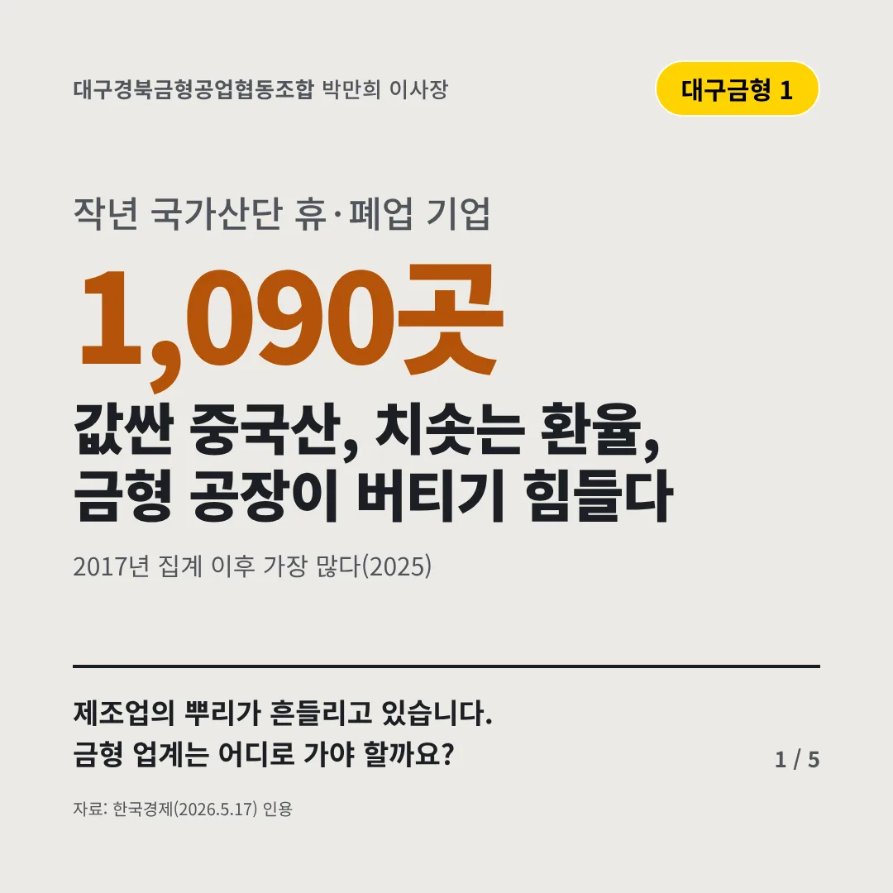
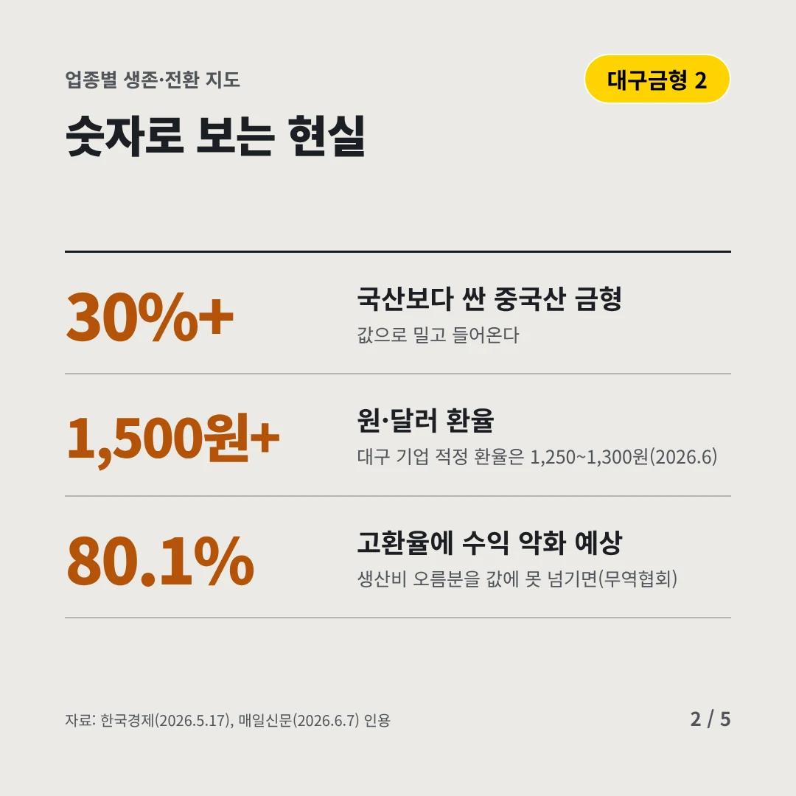
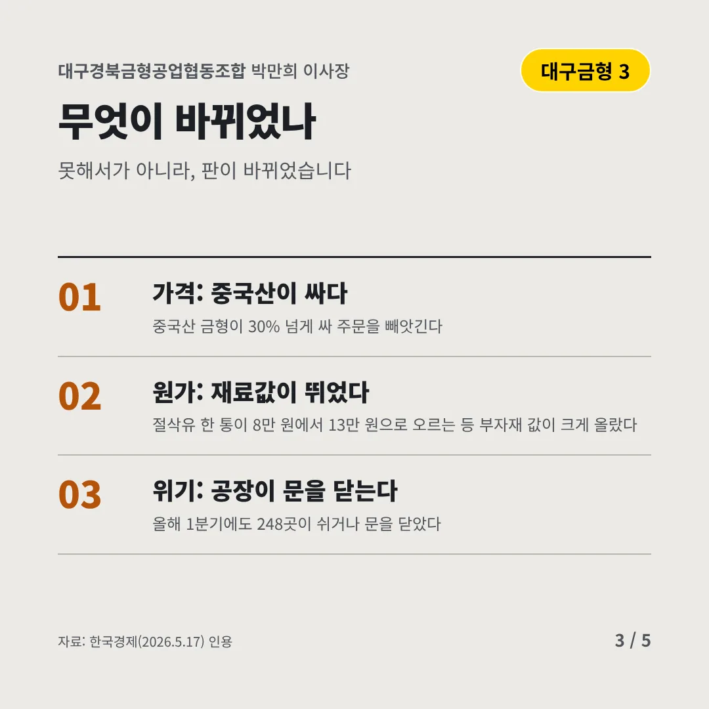
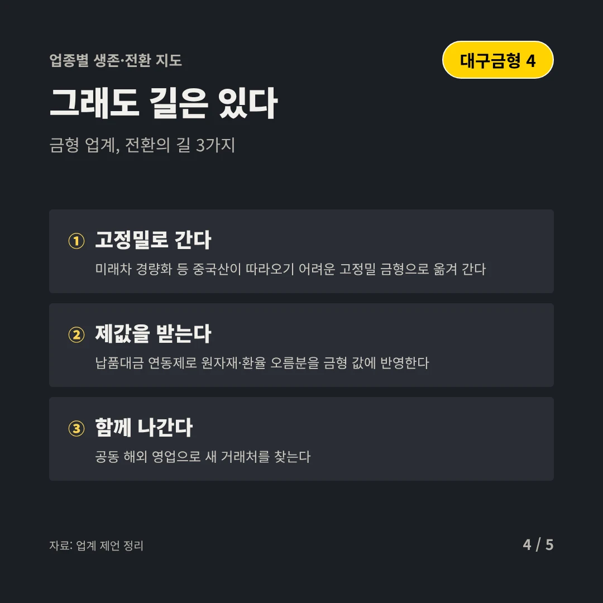
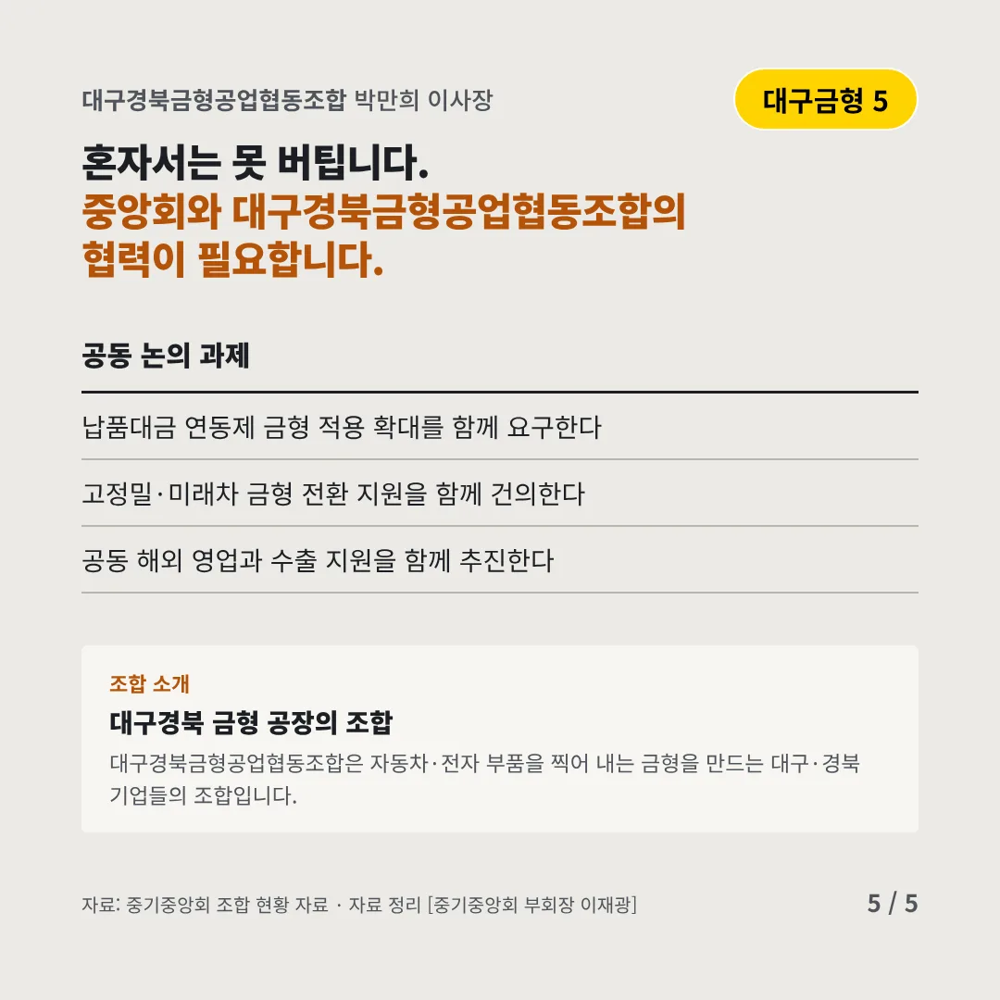
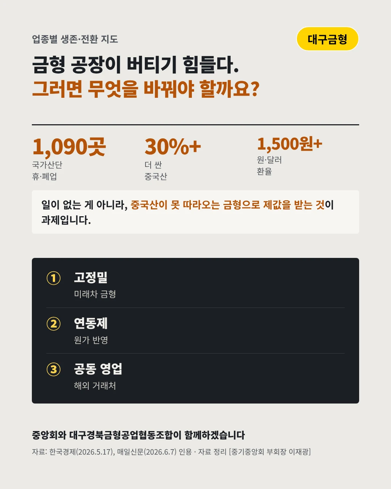

대구경북금형공업협동조합
값싼 중국산, 치솟는 환율, 금형 공장이 버티기 힘들다
1,090곳 작년 국가산단 휴·폐업 기업






제조업의 뿌리가 흔들리고 있습니다. 금형 업계는 어디로 가야 할까요?
숫자로 보는 현실
- 30%+국산보다 싼 중국산 금형값으로 밀고 들어온다
- 1,500원+원·달러 환율대구 기업 적정 환율은 1,250~1,300원(2026.6)
- 80.1%고환율에 수익 악화 예상생산비 오름분을 값에 못 넘기면(무역협회)
무엇이 바뀌었나
- 가격: 중국산이 싸다중국산 금형이 30% 넘게 싸 주문을 빼앗긴다
- 원가: 재료값이 뛰었다절삭유 한 통이 8만 원에서 13만 원으로 오르는 등 부자재 값이 크게 올랐다
- 위기: 공장이 문을 닫는다올해 1분기에도 248곳이 쉬거나 문을 닫았다
그래도 길은 있다
- 고정밀로 간다미래차 경량화 등 중국산이 따라오기 어려운 고정밀 금형으로 옮겨 간다
- 제값을 받는다납품대금 연동제로 원자재·환율 오름분을 금형 값에 반영한다
- 함께 나간다공동 해외 영업으로 새 거래처를 찾는다
한 장 요약

조합 소개
대구경북금형공업협동조합은 자동차·전자 부품을 찍어 내는 금형을 만드는 대구·경북 기업들의 조합입니다.
자료: 한국경제(2026.5.17), 매일신문(2026.6.7)